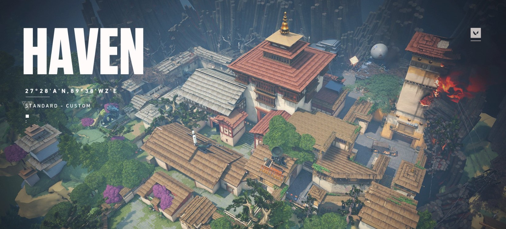

HAVEN
Haven es uno de los mapas originales de VALORANT, el FPS de Riot games. A diferencia de Split o Bind, Su característica principal es estar contar con tres puntos de bomba en los que colocar la Spike. Además, tiene 5 carriles diferenciados desde los que entrar a las zonas ofensivas, lo que dan al mapa un sinfín de posibilidades. La prioridad de los defensores será cubrir las grandes áreas del mapa que pueden ser atacadas, mientras que los encargados de llevar a cabo la ofensiva tratarán de socavar la estrategia por fuerza bruta y superioridad numérica.

GUIA DE MAPA
Aunque Haven es el mapa más grande, también es el menos espacioso, debido a los recovecos que el mapa presenta. A veces, parece que está mucho mejor equipado para defender que para atacar, y si acorralas a tus oponentes, también puedes dejarlos con la sensación de que no tienen a dónde ir. Tal vez más que en cualquier otro mapa del juego, una ventaja numérica puede cambiar el impulso de una partida en Haven.
También tiene tres sitios Spike, que exploraremos con más detalle a continuación. En general, esto significa que si bien la configuración favorece al lado defensor, hay más opciones disponibles por el lado atacante. De nuevo, la comunicación es clave entre ambos bandos, pues debido a la naturaleza y características del mapa, reunirse en un mismo lugar puede marcar la diferencia entre divertirse o simplemente tener una ronda frustrante. Hasta que no coloques el Spike, probablemente sea mejor tratar de cubrir más terreno, incluso si eso significa que algunos de vosotros vayáis solos.
Site A
Site A es, con diferencia, el más fácil de defender, pero también donde más fácil es eliminar a los defensores, por lo que ambos equipos deben tener en cuenta que jugar en Site A puede dejarlos expuestos. La forma más simple de defender Site A es desde Tower A, justo al lado del punto de generación del defensor. Es una de las pocas áreas elevadas del mapa, y da una buena ventaja para cualquier atacante que se aproxime. Es decir, siempre y cuando se acerquen por el lado de los atacantes. Si un jugador se abre camino a través del mapa, usando A-Link desde Site B, por ejemplo, puede fácilmente caer sobre el defensor en Tower A desde atrás. Utilizar una defensa de dos jugadores en Tower A es la mejor manera de combatir eso.
Site B

Site B está situado en el centro del mapa, y aunque al principio parece ser el más abierto, con una buena comunicación entre los defensores puede cerrarse muy rápidamente. Mantente en A-Link o C-Link, aunque A-Link es probablemente tu mejor opción para un punto de vista defensivo, ya que estarás mejor con los defensores en la Tower A que a nivel del suelo. Back B tampoco es una mala opción, pero está más expuesto de lo que debería ser un buen punto defensivo, y te deja expuesto a los ataques de tres aproximaciones; A-Link solo deja dos, siempre y cuando el equipo de Tower A haga su trabajo.
Sin embargo, para atacarlo, tendrás que eliminar al equipo de Tower B, ya que no podrás llamar a los defensores en un movimiento de pinza desde A y C. En su lugar, tendrás que eliminar a cualquier defensor que pueda estar ya en Tower B, mientras tus compañeros de equipo vigilan a los equipos A-Link y C-Link. También puedes usar una habilidad para bloquear a uno de ellos, si tus números son un poco claros. Además, debido al hecho de que los defensores probablemente estén en otro lugar antes de Spike, rushing B también es una opción sólida, si tienes ganas de jugártela.
Site C

El Spike Site C es la única área en todo el mapa que ofrece un pasaje lo suficientemente largo para que un francotirador pueda lucirse, y esa es fácilmente la forma más efectiva de defenderlo. Site C no tiene rincones y tampoco mucha cobertura, puertas o cajas... es solo un tiro directo y limpio desde el Skipe Site al fondo del mapa. La única cobertura es Cubby, pero aun así, es arriesgado. Los defensores ya tienen bastante ventaja sobre Haven; no les facilites el trabajo. Evita C Long como atacante.
Sin embargo, a través de C Short, Site C es el lugar más fácil de atacar en el mapa, especialmente si puedes organizar el asalto rápidamente. Defensivamente, la única área de la que preocuparse es Window C. Obviamente, esto emplazamiento ha sido construido como un puesto de avanzada defensiva e incluso el defensor más inexperto entenderá la señal para hacer guardia allí. Una habilidad como la "Borrasca" de Jett es una buena opción para tratar de eliminarlos. Después de eso, hay mucha cobertura disponible en Site C a través de cajas apiladas y esquinas. Si puedes llegar hasta aquí, solo depende de quién es el más hábil, y quién es el mejor tirador.